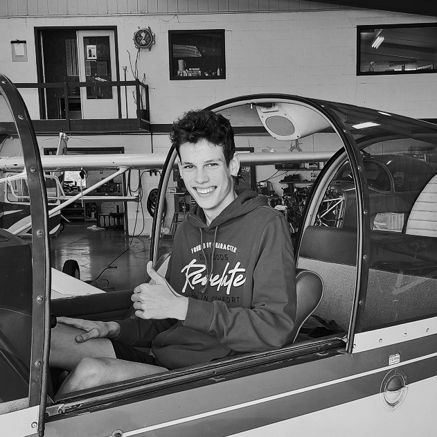
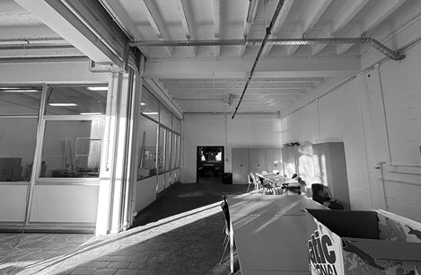
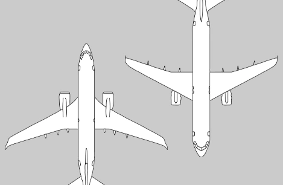
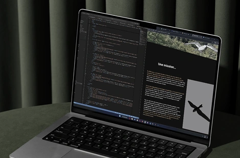
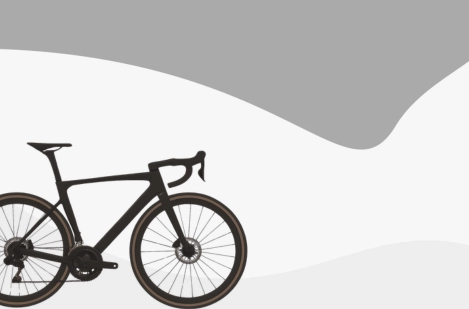

I recently graduated with a degree in computer graphics from the Haute École Albert Jacquard. After spending a year in automation and developing a passion for UI/UX, I enjoy working on a wide range of digital projects, from front-end development to design thinking. I pay close attention to detail, and love experimenting with new tools and ideas. I’m also a certified drone pilot and cyclist. Feel free to contact me if you’d like to collaborate or just say hi!

My projects

Rethinking-UX Case Study
This case study traces the progress of a school project aimed at redesigning the layout of a room to improve the student experience, fostering a more functional rest environment.
Read the case study
Dataplay Case Study
This case study traces the progress of a school project designed to teach us how to retrieve data from a JSON file and display it in the right place on a web page.
Read the case study
Design Fiction Case Study
This case study traces the progress of my Design Fiction project which is part of my year-end work. It documents the steps taken to imagine and prototype future scenarios involving drones.
Read the case study
A Wordpress project
This school project is actually my first WordPress project. I learned how to use this technology to build a fictional website for selling bicycles.
Consult the projectMy last year project
Here's my final project. It's a project that combines technology and agriculture. Cameras monitor strawberries—I won't say any more than that...
Consult the project